Every nutrient.
Label first.
Spectra is a food diary that tracks more than 90 nutrients, not just calories. It reads the nutrition label first, fills the gaps from spec sheets and USDA lab data, marks every estimate, and tells you what to change.
What it does
Built for people who want exact numbers: tiny amounts aren't rounded to zero, so they add up across the day the way they really do.
A diary that answers "how am I doing today?"
The summary card at the top of the diary has four swipeable views.
- Energy: eaten vs. today's target, workouts added to it automatically, calories burned, your deficit or surplus, and what's left to eat.
- Macros in grams and as a share of calories.
- Nutrients: your nutrient score and what's lowest today.
- Trend: weekly or monthly bars colored by surplus, maintain or deficit, against what you burned.
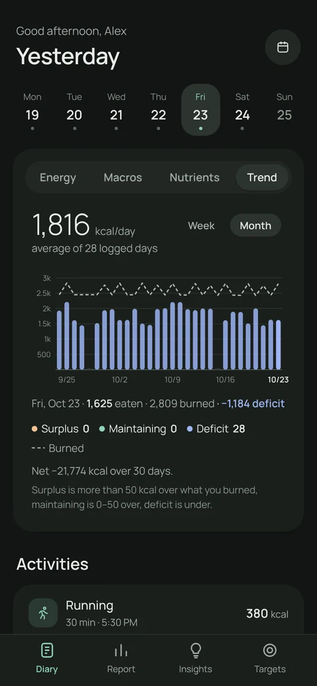
Meals your way
Breakfast, lunch, snacks and dinner to start, then make it yours.
- Add meals like "Pre-workout" or "Brunch", rename, reorder or delete them. Deleting moves its foods to another meal, so nothing is lost.
- Swipe a meal or food right for its menu: nutrition summary, copy to tomorrow, add again, remove.
- Long-press a food to drag it into a different order.
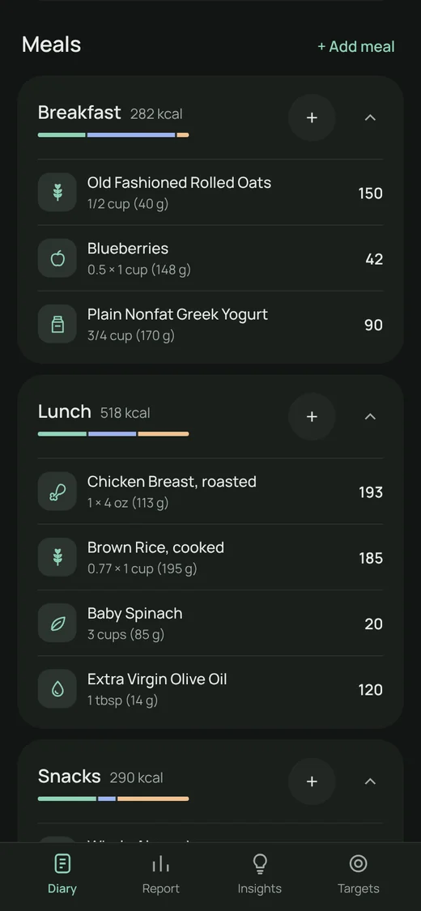
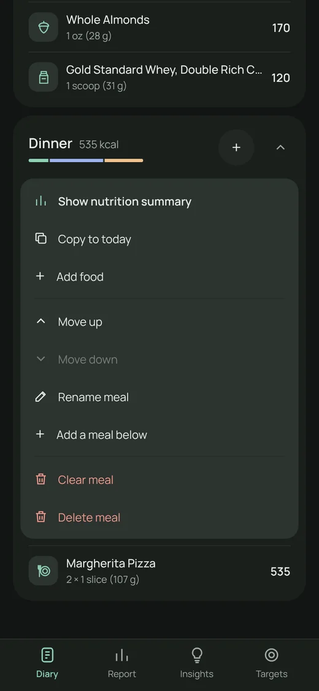
Find any food in seconds
One search box for your own foods, the USDA database and barcode numbers, with the scanner one tap away.
- The scanner waits for a steady, check-digit-valid read before accepting a barcode, so it doesn't log the wrong product.
- Product not in any database? Ask Gemini, then share or paste its answer back. Spectra reads it on the phone in a fraction of a second.
- Filter your foods by Recent, Protein, Produce, Dairy, Grains, Snacks, Supplements and more; tap + to log your usual amount.
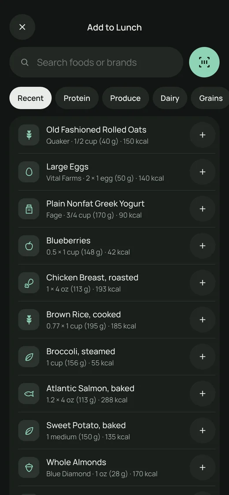
See where every number comes from
Each value carries its source, and Spectra uses the most exact one that agrees with the label.
- Label printed on the package · Spec manufacturer spec sheet · Lab USDA lab analysis · est. clearly marked estimate.
- Serving sizes from the label, plus g, oz, lb and baking measures (tsp, tbsp, cup, fl oz, ml) with real density conversion.
- Edit an entry to preview new portions; the numbers update as you type, and nothing changes until you tap Save.
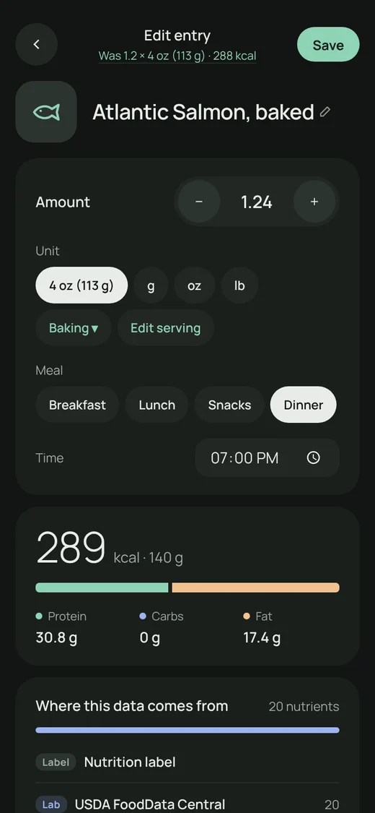
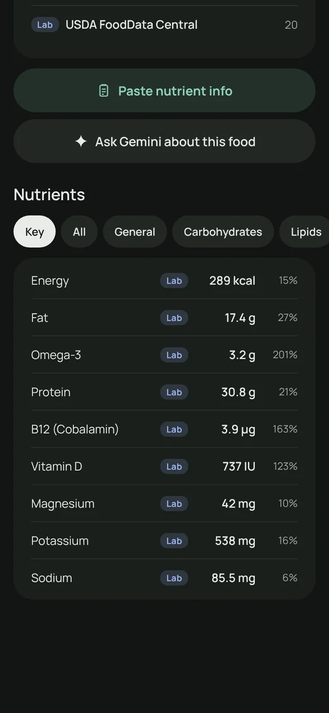
Insights from everything you've logged
Pick 7, 30 or 90 days, or all time. Tap any line in the summary to jump to its chart.
- Where your weight is heading, how fast, and whether that matches your goal, including how many days you missed your calorie deficit and by how much.
- Your scale weight next to what your calories predict, with likely reasons when they disagree.
- Nutrient gaps, omega-6 : omega-3 ratio, sodium, added sugar and saturated fat, and specific foods to add or cut, chosen from foods you already eat.
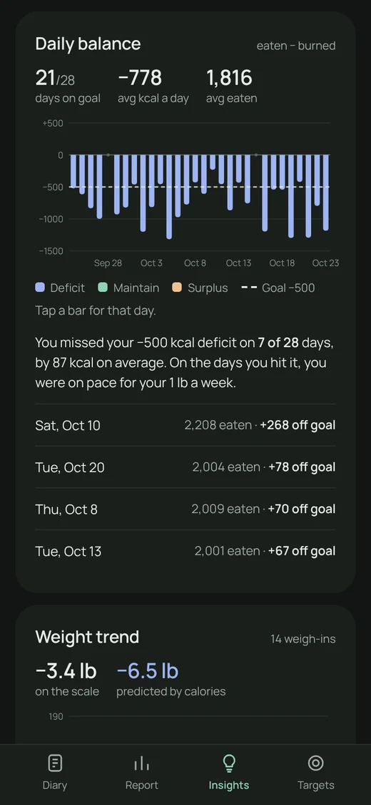
A daily report card
Every nutrient against targets set for your age, sex and life stage (pregnancy and breastfeeding included), from the Dietary Reference Intakes.
- Met, below, and over a limit, with the share of estimated values.
- Tap any nutrient for what it does, good sources, your upper limit, and which foods today it came from.
- Set your own target for any nutrient when you need one.
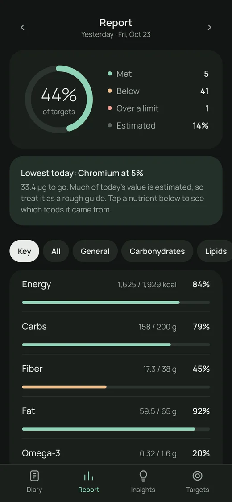
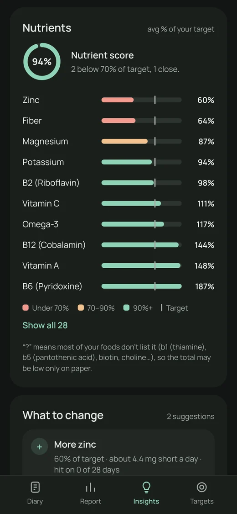
Your data, under your control
No account and no cloud. Everything is saved in the app's private storage on your phone.
- See how much space your diary, foods, and weights and workouts take.
- Export everything, one day, a month, a year or any date range. Import with "keep mine" or "replace".
- Select old months to export and delete in one step. Foods still in your diary are protected.
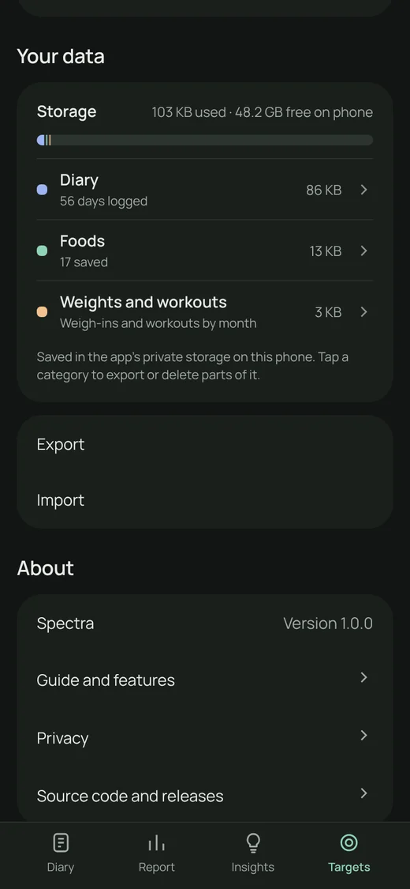
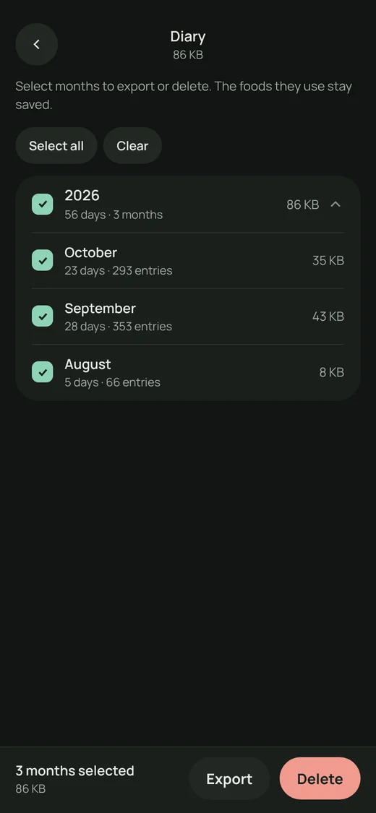
More screens
Real screens from version 1.0 with sample data.
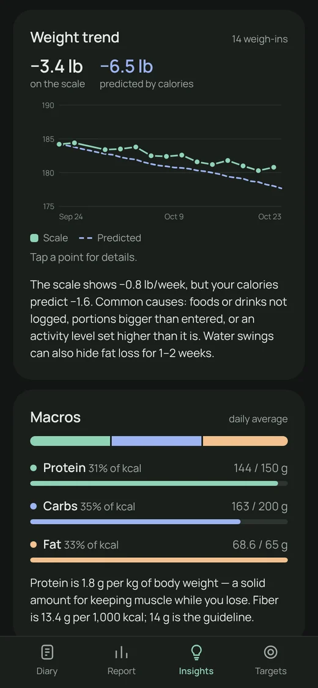
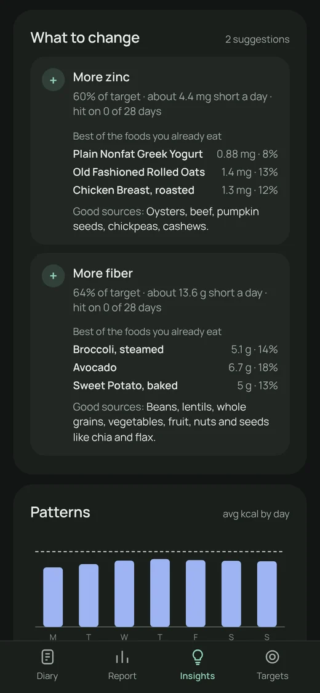
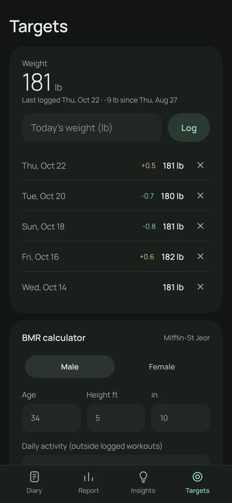
How to
Everything you need, from install to your first Insights. Tap a step to open it.
1Install Spectra
- On your Android phone, tap Download.
- Open the downloaded
Spectra.apk. If Android asks, allow your browser or Files app to install unknown apps, then go back and tap Install. - If Play Protect asks about an unrecognized developer, tap More details → Install anyway. Spectra isn't on Google Play, so Play Protect doesn't know it yet.
- Optional: check the download matches the official signing key.
2Set up your targets
- Open Targets and log today's weight.
- In BMR calculator, enter sex, age, height and daily activity. Spectra calculates what you burn (Mifflin-St Jeor).
- In Weight goal, choose lose, maintain or gain and a rate (for example 1 lb a week = a 500 kcal daily deficit). Turn on Set my energy target from this.
- Life stage, diet and smoking adjust your vitamin and mineral targets automatically.
3Add a free Gemini key (recommended)
Labels leave out most vitamins and minerals. With a key, Spectra looks them up for each new product.
- Go to aistudio.google.com, sign in, and choose Get API key. The free tier is enough for personal use; a Gemini app subscription doesn't include API access.
- In Spectra, open Targets → Data sources, paste the key, and tap Test key.
- Optional: add a free USDA key from api.data.gov/signup for faster searches.
Keys are stored only on your phone and are never included in exports.
4Log a food
- In the diary, tap + on a meal.
- Scan with the round button beside the search box, or search by name or brand. Your own foods appear first; press Enter to search USDA too.
- Pick the amount and unit (servings, g, oz, or Baking for tsp/tbsp/cup) and tap Add to ….
- Foods you've logged before have a + for one-tap logging with your usual amount.
5When a product isn't found
- Tap ✦ Ask Gemini. Spectra opens the Gemini app with a prepared question about that product.
- In Gemini, tap Share under the answer and choose Spectra, or copy the answer and tap Paste answer.
- Spectra reads every nutrient line, uses the label's serving size, and marks estimates as est.
- Or tap Create it yourself and enter the label's serving size and values.
6Edit what you logged
- Tap a food in the diary.
- Change the amount with −/+ or by typing, or change unit, meal or time. Calories and nutrients update as you go.
- Tap Save (top right) to keep it. Tap the "Was …" line to go back, or just go back to discard.
- To remove it, swipe the food right in the diary and choose Remove from diary.
7Customize meals
- Tap + Add meal next to the Meals heading, or swipe a meal right and tap ⋯ → Add a meal below.
- From the same ⋯ menu: Move up, Move down, Rename meal, Clear meal or Delete meal.
- Long-press a food to drag it within its meal.
8Log workouts and weight
- In the diary, under Activities, tap Add activity, pick the type and minutes. Calories are calculated from your weight.
- Workout calories are added to that day's target, so your planned deficit stays the same (you can turn this off in Targets).
- Log your weight in Targets a few times a week. Insights compares it with what your calories predict.
9Read your Insights
- Open Insights and pick a period.
- The top card rates calorie goal, protein, fiber, vitamins and minerals, sodium and more. Tap a line to jump to its details.
- What to change lists the specific nutrients to add or cut and the foods to do it with.
- Days far under your target are treated as partly logged and left out, so averages stay honest.
10Export, import and clean up
- Targets → Your data → Export: everything, a day, a month, a year or a range. The file goes to Downloads.
- Import: pick the file, choose the range, and choose Keep mine, add missing or Replace with backup.
- Tap Diary, Foods or Weights and workouts on the storage card to select months or unused foods, then Export or Delete.
11Move from a test build ("Nutrients")
- In the old app, open Targets → Your data → Export → Everything.
- Install Spectra. It installs alongside the old app.
- In Spectra, Targets → Your data → Import, pick the file, tap Import. Re-enter your API keys (they're never exported).
- When everything looks right, uninstall the old app.
12Update to a new version
- Download the latest
Spectra.apkfrom this page and install it over the current app. Your data stays. - Your version is shown in Targets → About.
- Android will only install an update signed with the same key, which protects you from tampered copies.
Private by design
No account, no analytics, no ads. Read the full privacy policy.
Stays on your phone
Your diary, foods, weights and keys live in the app's private storage. They're excluded from Android cloud backup and device transfer; move them only with Export.
Only what's needed leaves
Barcode numbers and food names go to Open Food Facts and USDA to look products up. AI questions go to Gemini or Claude with your own key. Nothing else is sent anywhere.
Locked down
Encrypted connections only, a strict content policy that blocks third-party scripts, and links that can only open web pages. The source code is public.
Download and verify
Every release is built and signed the same way. You can check the file before installing.
Download
The latest version, for Android 10 and newer (64-bit and 32-bit ARM).
Signing certificate
Official builds are signed with this certificate (SHA-256):
D3:83:DB:A8:E0:45:83:83:64:D0:5A:D6:3C:88:00:B5:78:89:F3:67:3F:9F:F7:8B:C9:F4:B4:69:6E:4F:6E:E6Check it
Compare the file with SHA256SUMS.txt on the release, or check the certificate with apksigner verify --print-certs Spectra.apk. Tools like AppVerifier do the same on the phone.
Questions
Is it free?
Yes. Spectra is free with no ads or subscriptions. Gemini's free tier covers personal use; if you use Claude instead, Anthropic bills your own API account.
Does it work offline?
Logging foods you've saved, the diary, Report and Insights all work offline. Looking up new products needs a connection.
Why not just use the label?
US labels only require a handful of nutrients and round small amounts to 0. Spectra keeps the label's numbers and adds the rest from spec sheets and lab data, each marked with its source.
Is it on Google Play or iPhone?
Not yet. Version 1.0 is a direct Android download. The app is a web app inside an Android shell, so other platforms are possible later.
How much storage does it use?
About half a megabyte per year of daily logging, plus about 5 KB per saved food. See exact numbers in Targets → Your data.
Found a bug or a security issue?
Open an issue on GitHub. For security problems, see the security policy and report privately.